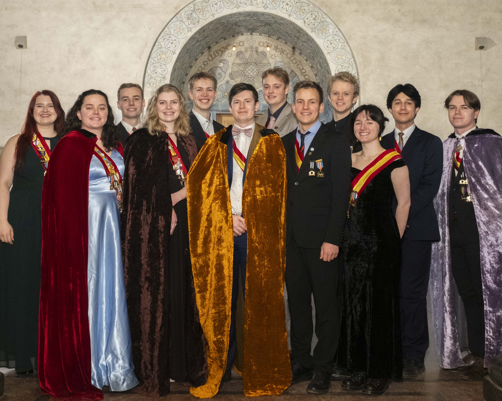
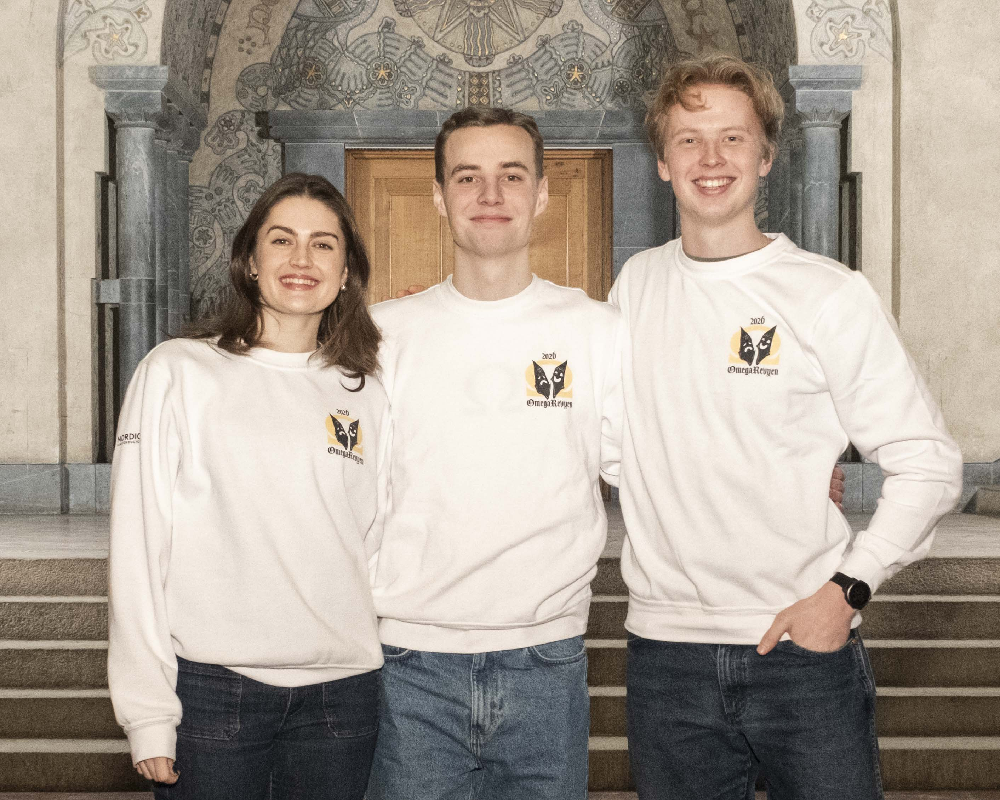
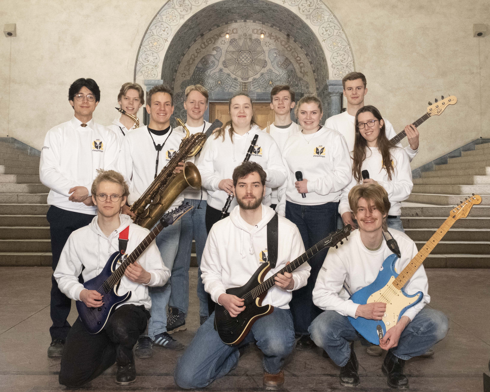
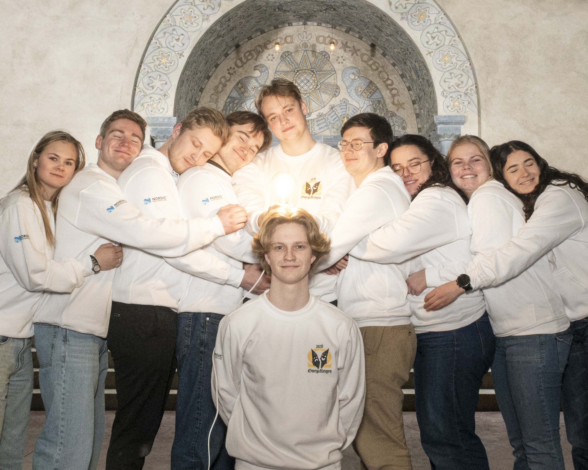
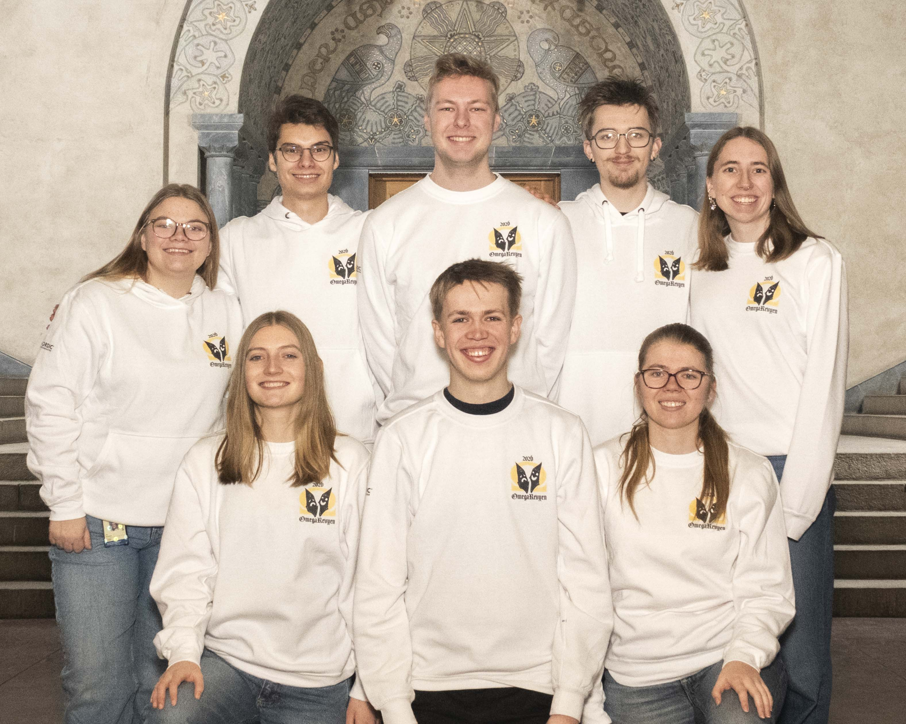
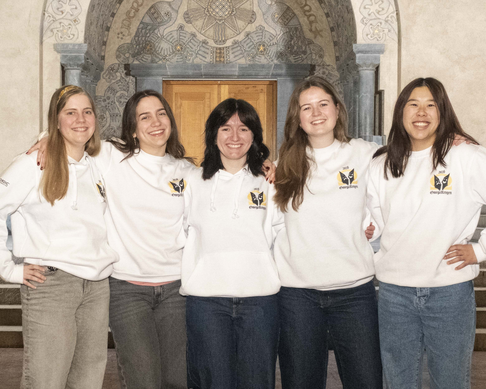
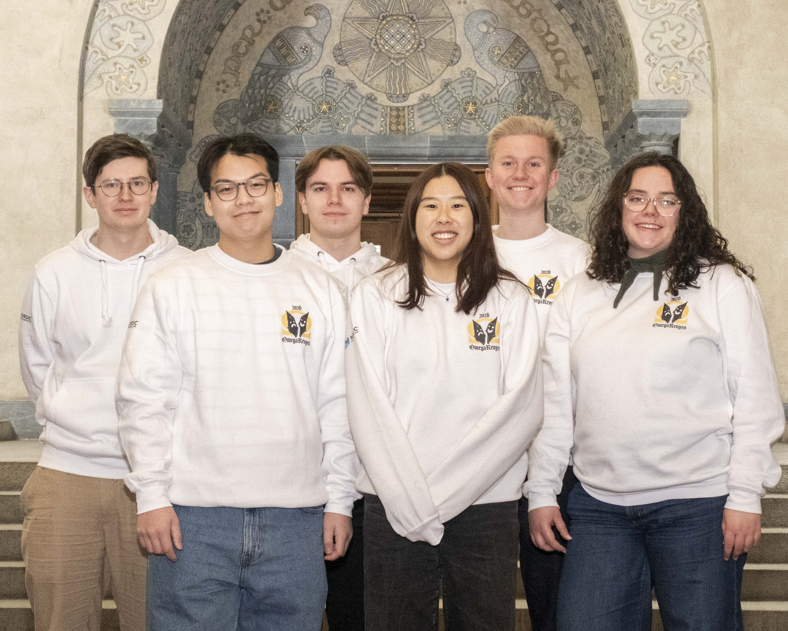
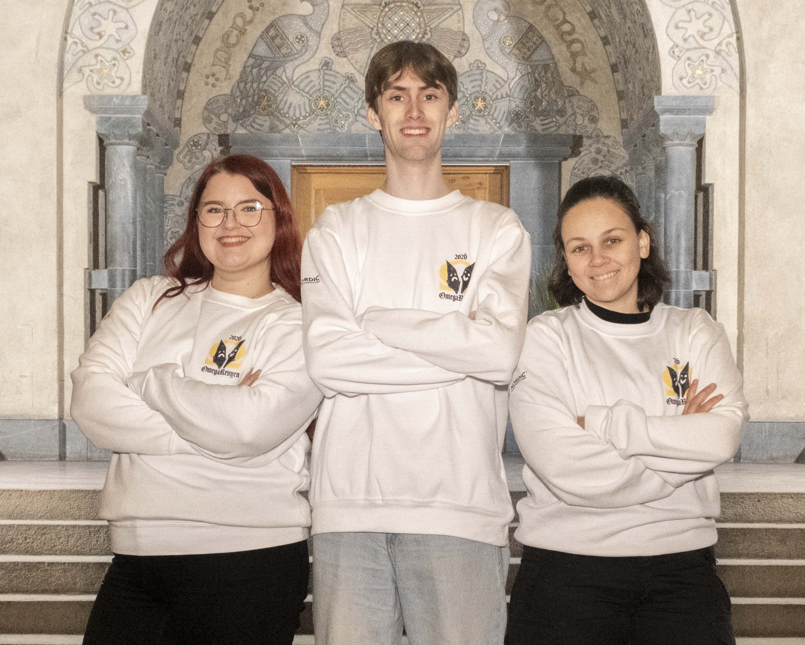

Undergrupper

Rebecca Kransberg, Elinda Engvik, Fredrik Sanner, Anette Grønland, Albert Hovda Røed, Kim Hamberg, Benjamin Gåserød, Simon Buggeland, Åmund Velle, Mai Skjelby, Lars André Jansen, Johan Storstad
Revystyret

F.v: Ida Eskilda Abrahamsen-Müller, regissør Fredrik Sanner, Tord Tranum
Regissør og medregissører

Bakerste rad f.v:
Lars André Jansen (Trommer),
Andreas Tjøm (altsaxofon),
Simon Buggeland (Barisaxofon),
Dennis Stellmacher (Keys),
Emilie Johnsen (klarinett),
Magnus Bonvik (Trommer),
Anette Grønland (Vokal),
Kristin Moldsvor (Vokal),
Mikkel Farner (Bassgitar),
Foran f.v: Åmund Velle (Vokal),
Bror Sæther (Gitar),
Henrik Horpedal (Gitar og Pedal Steel).
Ikke på bildet: Emre Ibsen (Tensaxofon)
Band

f.v:
Elise Gusgaard,
Martin Ness,
Kjartan Roalsvik,
Elias Møinichen Alsos,
Benjamin Gåserød,
Lasse Kristiansen,
Kim Hamberg,
Elinda Førland Engvik,
Eirin Heier Einerkjær,
Oda Brenne.
Ikke på bilde:
Anita Bueno Lindmoen, Iver Myhrsveen,
Eirik Nordheim, Eskil Hasås Bergum
Manus

Bak f.v:
Pia Mosskull,
Anders Tørresen,
Martin Kristoffer Tomter,
Eirik Hoel,
Vanja Bjørnevik.
Foran f.v:
Karoline Sofie Garsjø,
Albert Hovda Røed,
Vilde Kroken Viksøy
Scene

f.v:
Hanne Gedde-Dahl,
Athena McQueen,
Mai Alice Skjelby,
Christin Bertelsen,
Ina Min Rørnes
Kostyme

f.v:
Kim Hamberg,
David Hoang,
Johan Hjelseth Storstad,
Ina Min Rørnes,
Theodor Kvalsvik Lauritzen,
Elinda Frøyland Engvik
Kos

f.v:
Rebecca Christine Kransberg,
Einar Eide,
Maria Fjellstad
PR